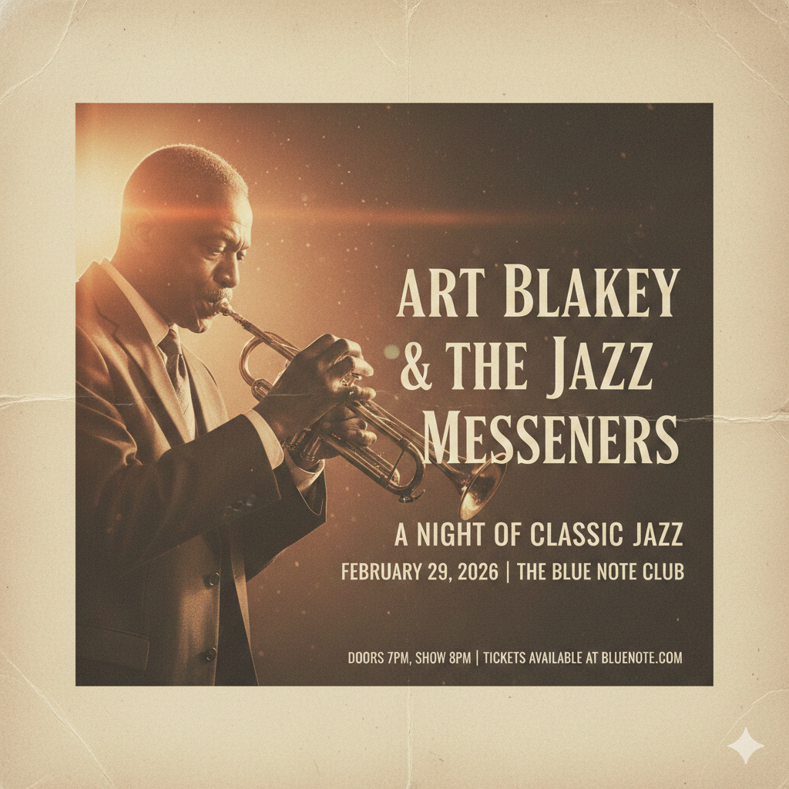
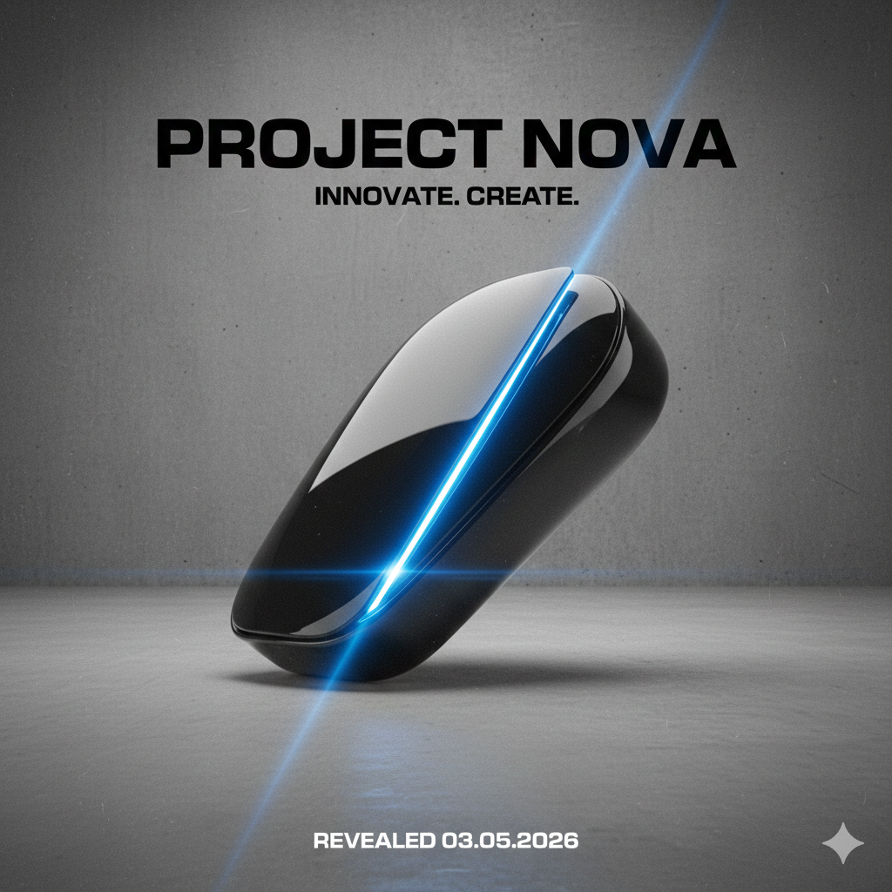
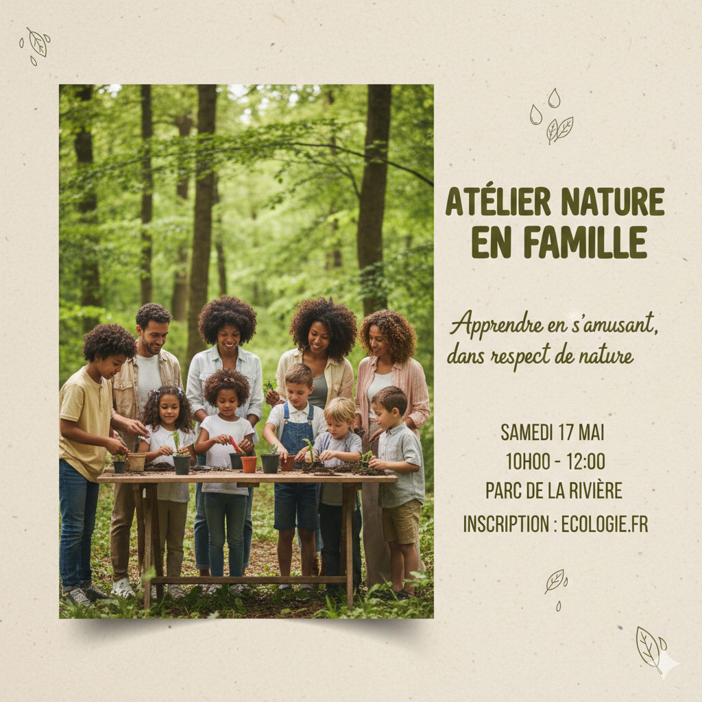

Bloc 3 : Conception et réalisation
1. Le processus de conception : Du concept à l'image finale
Créer une image efficace ne commence pas devant l'écran ou l'appareil photo. Votre création débute par une réflexion stratégique sur ce que vous voulez communiquer et à qui vous vous adressez.
1.1 Les questions fondamentales
1. Quel est mon objectif?
- Informer (affiche d'événement, infographie)
- Persuader (publicité, promotion)
- Émouvoir (œuvre artistique, campagne sociale)
- Expliquer (tutoriel visuel, schéma)
2. Qui est mon public cible?
- Âge et génération
- Niveau de culture visuelle
- Contexte culturel
- Centres d'intérêt
- Plateforme de diffusion
3. Où sera diffusée l'image?
- Réseaux sociaux (Instagram, Facebook, TikTok)
- Impression (affiche, flyer, magazine)
- Web (site internet, bannière)
- Écran (présentation, vidéo)
4. Quel message dois-je transmettre?
- Message principal (une idée claire)
- Informations secondaires (détails complémentaires)
- Appel à l'action (si applicable)
Règle d'or
Une image efficace communique une idée principale clairement. Si vous essayez de tout dire en même temps, vous ne dites rien du tout.
1.2 Connaître son public cible
Référence : Comprendre son audience
Référence : Créer un personna
Pourquoi c'est important?
Un design destiné à des adolescents sur TikTok ne fonctionnera pas pour des professionnels sur LinkedIn. Votre public détermine vos choix esthétiques. Voici quelques guides rapides mais n'oubliez pas que l'idéal est de bien rechercher votre public cible.
Adapter selon l'âge
Ceci ne sont quelques guides génériques, n'oubliez pas que ces conseils varient avec les générations.
Jeune public (13-25 ans)
- Couleurs vives et saturées
- Typographie moderne, bold, parfois expérimentale
- Références à la culture pop actuelle
- Format vertical (Stories, TikTok)
- Contenu dynamique, rapide à comprendre
Public adulte (25-45 ans)
- Palette équilibrée, parfois plus sobre
- Typographie claire mais avec personnalité
- Mix de modernité et de crédibilité
- Formats variés selon la plateforme
- Contenu informatif avec impact visuel
Public mature (45+ ans)
- Contraste élevé pour la lisibilité
- Typographie traditionnelle, sans fioritures
- Couleurs classiques ou naturelles
- Mise en page aérée, respiration
- Clarté avant créativité
Adapter selon le contexte culturel
- Les couleurs ont des significations différentes selon les cultures
- Certains symboles visuels sont universels, d'autres sont culturellement spécifiques
- L'humour visuel ne se traduit pas toujours d'une culture à l'autre
Adapter selon la plateforme
- Format carré ou vertical
- Esthétique soignée, cohérente
- Couleurs harmonieuses
- Texte minimal, impact visuel maximal
- Format horizontal ou carré
- Plus de texte acceptable
- Cible variée : adapter au public spécifique
- Privilégier la clarté
- Professionnel et sobre
- Typographie claire
- Infographies et données visuelles
- Crédibilité avant créativité
TikTok
- Format vertical exclusivement
- Mouvement et dynamisme (même sur image fixe)
- Texte accrocheur, courts
- Tendances visuelles actuelles
1.3 Définir l'intention créative
Le mood board mental
Avant de créer, visualisez mentalement :
- Atmosphère : énergique ou calme? Dramatique ou léger?
- Palette : chaude ou froide? Vive ou désaturée?
- Style : minimaliste ou maximaliste? Moderne ou vintage?
Références visuelles
- Cherchez 2-3 images qui évoquent l'ambiance souhaitée
- Analysez ce qui fonctionne dans ces références
- Ne copiez pas : inspirez-vous
L'intention en une phrase
Formulez votre intention en une phrase claire :
- "Je veux créer une affiche énergique et urbaine pour promouvoir un festival de musique électronique auprès des 18-30 ans."
- "Je veux créer un visuel apaisant et naturel pour une campagne de bien-être destinée aux adultes stressés."
Cette phrase guide tous vos choix techniques.
1.4 Le workflow de conception en 5 étapes
Étape 1 : Recherche et planification (10-15% du temps)
- Définir l'objectif, le public, le message
- Rassembler les éléments (photos, textes, logos)
- Choisir les outils (Canva, appareil photo, etc.)
- Créer un croquis rapide (même sur papier)
Étape 2 : Capture ou sélection d'image (20-25% du temps)
- Photographier en pensant composition, lumière, couleur (Bloc 1)
- OU sélectionner des images existantes de qualité
- Privilégier les images haute résolution
- Choisir des visuels cohérents avec l'intention
Étape 3 : Composition et mise en page (25-30% du temps)
- Importer dans Canva (ou autre outil)
- Appliquer la règle des tiers
- Créer l'équilibre visuel
- Ajouter les éléments graphiques si nécessaire
Étape 4 : Retouche et typographie (25-30% du temps)
- Ajuster exposition, contraste, couleurs (Bloc 2)
- Créer la hiérarchie typographique
- Assurer la lisibilité du texte
- Affiner les détails
Étape 5 : Révision et export (10-15% du temps)
- Vérifier la lisibilité sur différents écrans/tailles
- Corriger l'orthographe
- S'assurer que le message est clair
- Exporter au bon format pour la diffusion
Conseil pratique
Ne passez pas 80% de votre temps sur la retouche technique. La conception (composition, intention, message) est plus importante que la perfection technique.
1.5 La checklist du créateur
Avant de commencer
- [ ] J'ai défini mon objectif principal
- [ ] Je connais mon public cible
- [ ] Je sais où sera diffusée l'image
- [ ] J'ai une phrase d'intention claire
- [ ] J'ai rassemblé mes éléments visuels et textuels
Pendant la création
- [ ] Ma composition guide le regard (règle des tiers, lignes directrices)
- [ ] Ma lumière et mon contraste servent mon intention
- [ ] Ma palette de couleurs évoque l'émotion souhaitée
- [ ] Ma typographie est lisible et hiérarchisée
- [ ] Mon message principal est immédiatement compréhensible
Avant l'export
- [ ] L'image fonctionne même en petit format
- [ ] Le texte est lisible sur mobile
- [ ] L'orthographe est correcte
- [ ] Le format et la résolution sont adaptés à la diffusion
- [ ] L'image reflète fidèlement mon intention initiale
1.6 Erreurs courantes à éviter
Trop vouloir en dire
❌ Mauvais : Une affiche avec 5 messages différents, 10 polices, 20 couleurs ✅ Bon : Une idée principale forte, renforcée par tous les éléments visuels
Ignorer le public cible
❌ Mauvais : Une affiche de festival électro avec une police serif classique et des tons pastels ✅ Bon : Une affiche adaptée aux codes visuels de la scène électro et de son public
Négliger la lisibilité
❌ Mauvais : Texte gris clair sur fond gris moyen, police décorative illisible ✅ Bon : Contraste élevé, typographie claire, taille suffisante
Oublier le contexte de diffusion
❌ Mauvais : Image horizontale pour Instagram Story, texte minuscule pour une affiche vue de loin ✅ Bon : Format adapté à la plateforme, taille du texte proportionnelle à la distance de lecture
Se perdre dans les détails techniques
❌ Mauvais : Passer 2 heures à ajuster la saturation de 3% ✅ Bon : Prioriser la composition, le message, l'impact global
Copier sans comprendre
❌ Mauvais : Reproduire un style tendance sans savoir pourquoi il fonctionne ✅ Bon : S'inspirer d'une tendance en comprenant ses principes et en l'adaptant
1.7 Le test du "scroll rapide"
Principe
Sur les réseaux sociaux, vous avez environ 0,3 seconde pour capter l'attention. Testez votre création avec cette méthode :
- Affichez votre image en petit format (comme sur un feed Instagram)
- Regardez-la pendant 1 seconde maximum
- Détournez le regard
Questions à vous poser :
- Ai-je compris le message principal?
- Un élément a-t-il capté mon attention?
- L'image se distingue-t-elle visuellement?
- Ai-je envie de regarder de plus près?
Si vous répondez "non" à ces questions, votre design doit être simplifié ou renforcé.
1.8 Itération et amélioration
Le design est un processus itératif
Rarement réussit-on du premier coup. C'est normal et sain de :
- Créer plusieurs versions
- Tester différentes palettes
- Ajuster la hiérarchie typographique
- Demander des retours
Méthode des 3 versions
Pour tout projet important :
- Version 1 : Votre première idée, spontanée
- Version 2 : Une approche différente (autre palette, autre composition)
- Version 3 : Fusion des meilleurs éléments des deux premières
Comparez ensuite les trois et choisissez celle qui répond le mieux à votre intention.
Feedback constructif
Quand vous demandez un retour :
- Précisez votre intention et votre public cible
- Posez des questions spécifiques ("Est-ce que le message principal est clair?")
- Accueillez les critiques sans vous justifier immédiatement
- Identifiez les retours récurrents : ce sont les plus importants
1.9 Exemples appliqués
Exemple 1 : Affiche de concert de jazz
Analyse du brief
- Objectif : Promouvoir un concert
- Public : Adultes 30-60 ans, amateurs de jazz
- Diffusion : Affiches imprimées + réseaux sociaux
- Message : "Soirée jazz intime et élégante"
Décisions créatives
- Composition : Portrait du musicien sur ligne des tiers, regard dirigeant vers le texte
- Lumière : Contre-jour doux créant une atmosphère feutrée
- Couleur : Tons chauds (orangé, brun), désaturation partielle pour effet vintage
- Typographie : Serif élégante pour le titre, sans-serif claire pour les infos pratiques
- Hiérarchie : Nom de l'artiste en très grand, date/lieu en moyen, détails en petit

Exemple 2 : Post Instagram pour lancement de produit tech
Analyse du brief
- Objectif : Créer du désir et de l'anticipation
- Public : Jeunes adultes 18-35 ans, early adopters tech
- Diffusion : Instagram (carré), Stories
- Message : "Innovation. Bientôt disponible."
Décisions créatives
- Composition : Produit centré sur fond minimaliste, espace négatif généreux
- Lumière : Éclairage dramatique latéral révélant les courbes du produit
- Couleur : Noir et blanc avec un accent de couleur vive (bleu électrique) sur le produit
- Typographie : Sans-serif ultra-bold moderne, tout en majuscules
- Hiérarchie : Nom du produit dominant, date de sortie en petit avec effet de suspense

Exemple 3 : Flyer pour atelier écologique
Analyse du brief
- Objectif : Informer et encourager l'inscription
- Public : Familles, sensibilité environnementale
- Diffusion : Impression + PDF à partager
- Message : "Apprendre en s'amusant, dans le respect de la nature"
Décisions créatives
- Composition : Photo de groupe dans la nature, lignes directrices (arbres) menant au texte
- Lumière : Lumière naturelle douce, ambiance chaleureuse
- Couleur : Verts naturels et tons terreux, palette harmonieuse et apaisante
- Typographie : Sans-serif arrondie et accessible, script pour le slogan
- Hiérarchie : Titre principal visible, informations pratiques organisées clairement

1.10 Récapitulatif : Du concept à la création
Le processus en un coup d'œil
RÉFLEXION (Qui? Quoi? Où? Pourquoi?)
↓
INTENTION CRÉATIVE (Atmosphère, palette, style)
↓
CAPTURE/SÉLECTION (Images de qualité cohérentes)
↓
COMPOSITION (Règle des tiers, lignes, équilibre)
↓
RETOUCHE (Lumière, contraste, couleur)
↓
TYPOGRAPHIE (Hiérarchie, lisibilité)
↓
RÉVISION (Checklist, test du scroll, feedback)
↓
EXPORT (Format adapté, optimisation)
Principe fondamental
Chaque décision technique — du cadrage initial au choix de la police — doit découler de votre intention créative et de votre connaissance du public cible. La technique est au service du message, jamais l'inverse.
Question de réflexion
Pensez à une image que vous avez vue récemment (affiche, post sur les réseaux, publicité) et qui vous a marqué.
- Quel était le public cible?
- Quel était le message principal?
- Quels choix visuels (composition, couleur, typo) ont été faits pour servir ce message?
- Est-ce que ces choix étaient cohérents avec l'intention?
Cette capacité d'analyse critique s'affine avec la pratique et améliore vos propres créations.